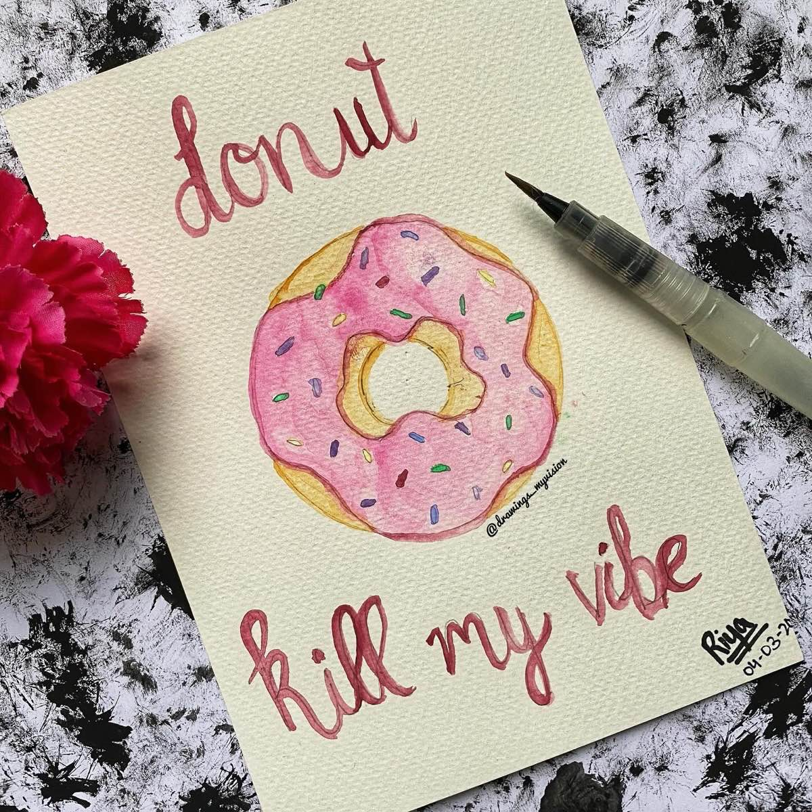
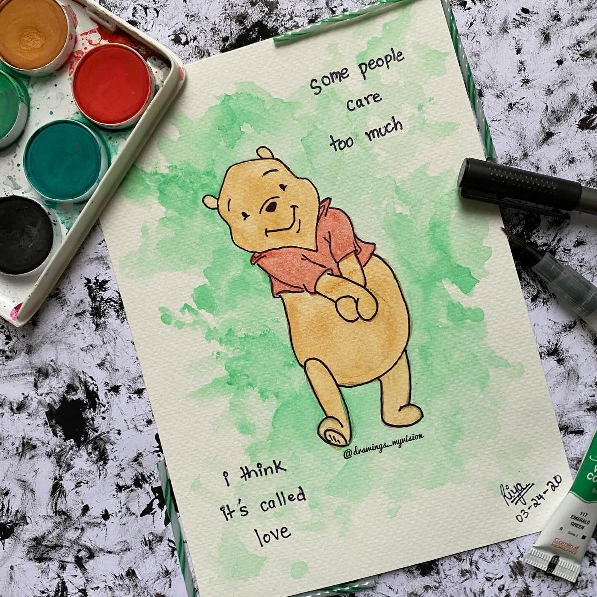
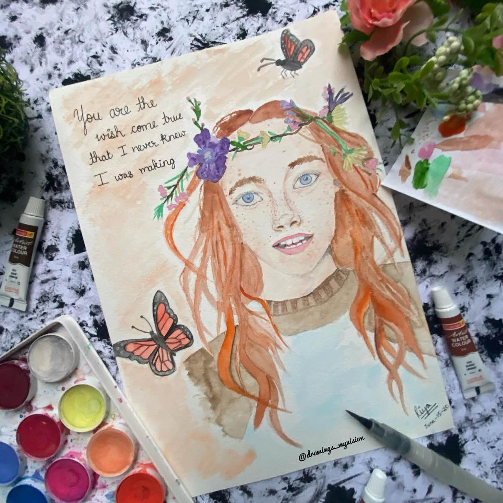
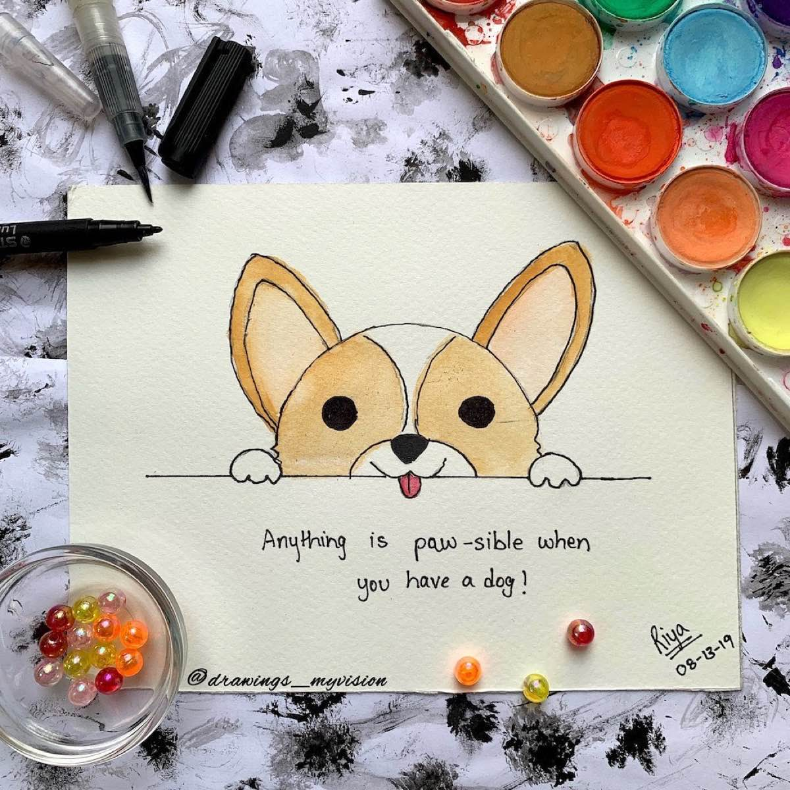
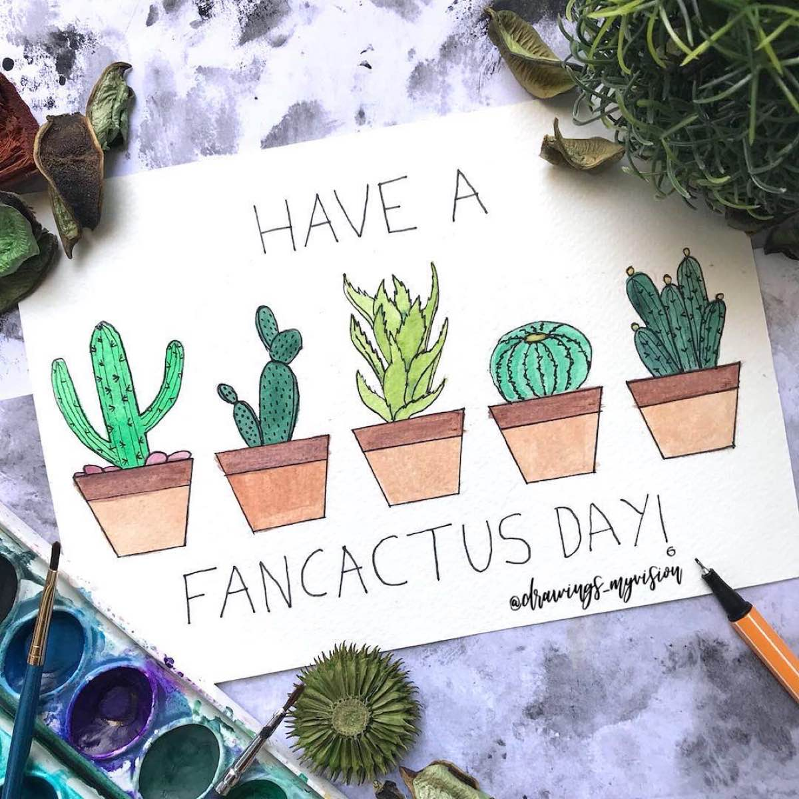
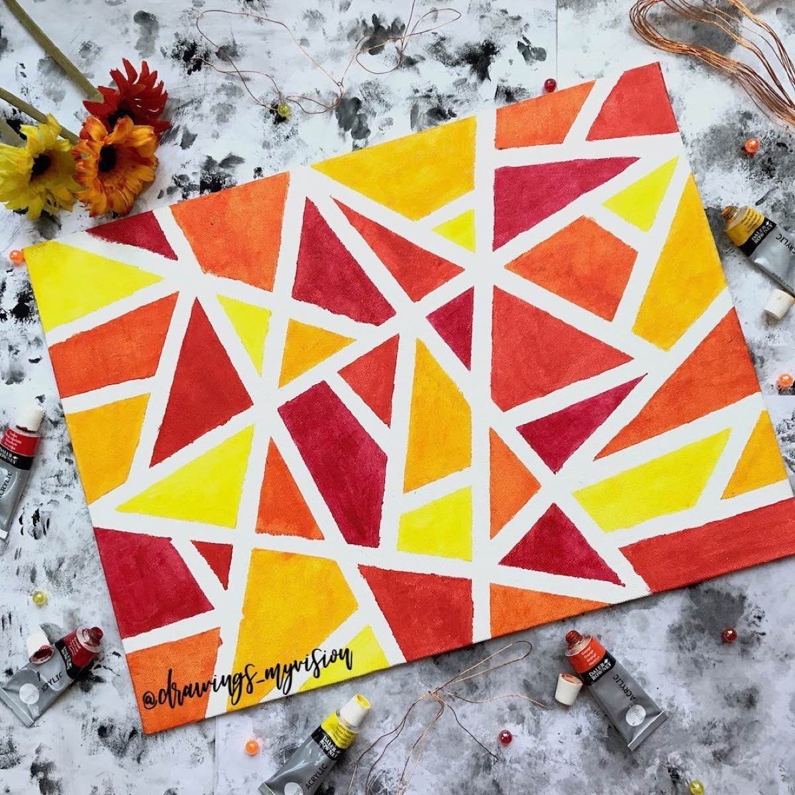
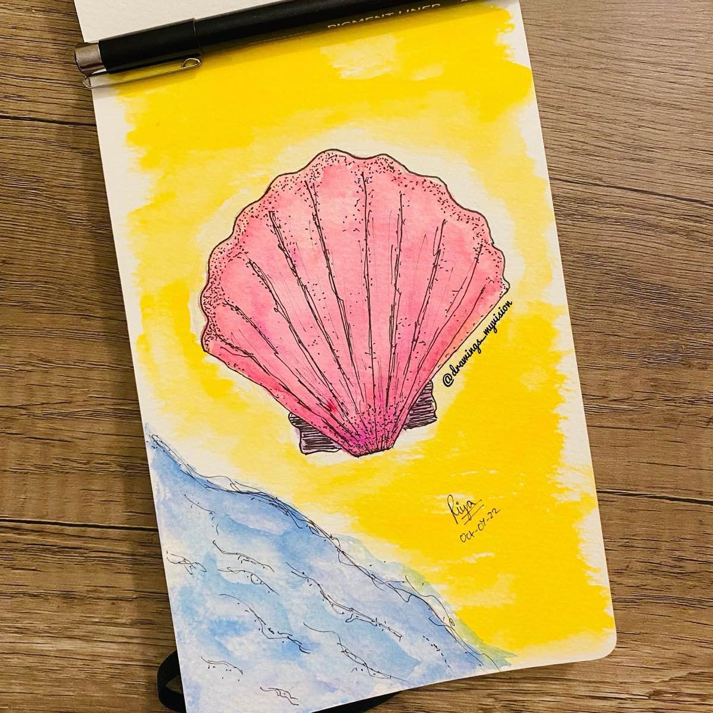
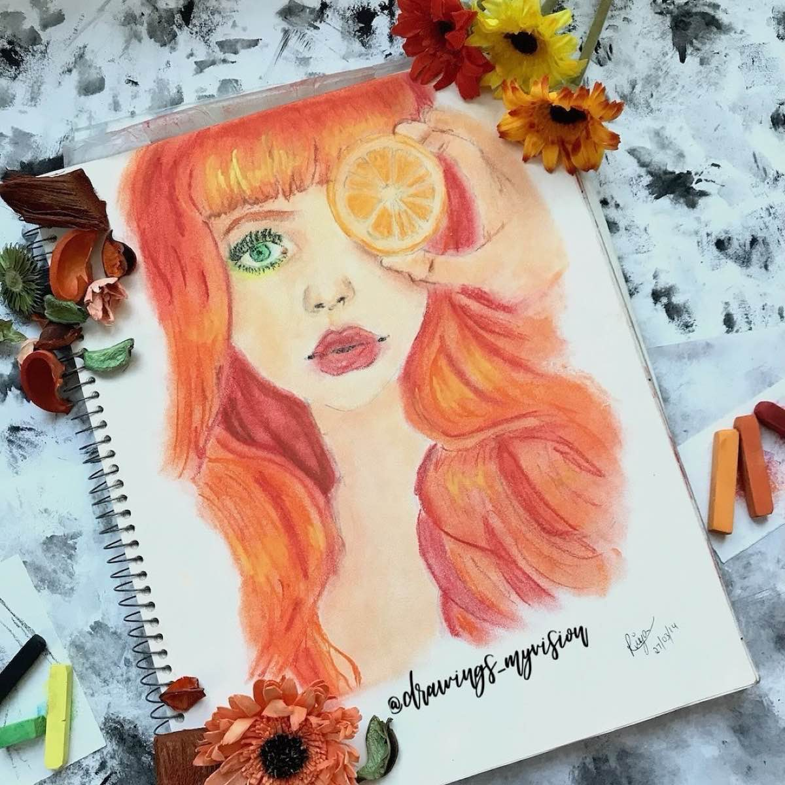

A little color, a little joy
A few favorites from my sketchbooks and canvases, inspired by everyday joys and a little imagination. Tap a piece to see more on Instagram.

Donut kill my vibeWatercolor on paper · A5 
Winnie-the-PoohWatercolor and fineliner on paper 
Anne with an EWatercolor on paper 
Anything is paw-sibleWatercolor and marker on paper · A5 
Have a fancactus dayWatercolor and fineliner on paper · A5 
Warm colorsAcrylic on canvas board 
ScallopFineliner in a sketchbook · Inktober 2022 
Orange-haired girlChalk pastel in a sketchbook · 11 × 14 in